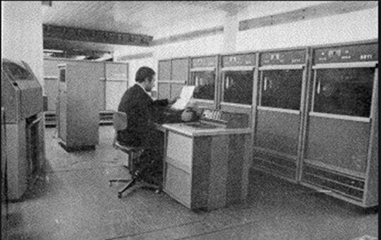
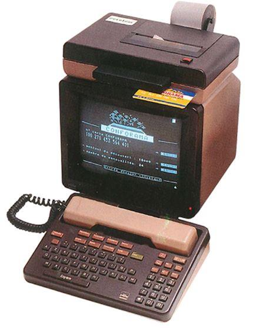
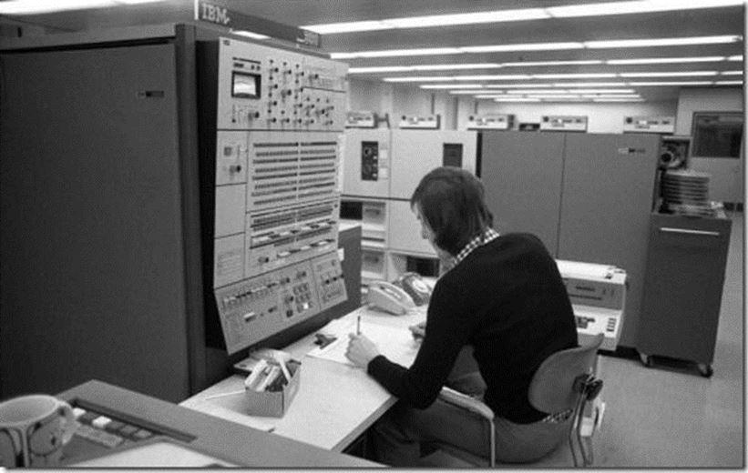

La différence entre un vrai chef d’État et un « dirigeant de rencontre » est très facile à déceler : le premier a une vision globale, qui porte son regard loin devant et inclus l’avenir dans sa stratégie. Le second voit pour seul avenir l’échéance de sa prochaine réélection. On peut donc affirmer sans se tromper que le seul « chef d’État » que la France ait connu depuis 80 ans s’appelle Charles de Gaulle !
Le Plan Calcul
Lancement du premier plan calcul avec Michel Debré et Pierre MessmerIl était impensable qu’un visionnaire comme le général ne s’intéresse pas à l’informatique. C’est donc tout logiquement qu’est né le plan calcul.
L'origine en est en réalité l'Affaire Bull : la prise de contrôle par General Electric, en 1964, de la firme française Bull affaiblie face à la domination d'IBM sur le marché informatique. Bull est alors le seul constructeur français d'ordinateurs. Ne souhaitant pas laisser l'informatique en des mains entièrement américaines, les ministres des Finances Michel Debré et des Armées Pierre Messmer proposent en janvier 1966 le développement d'une industrie informatique en France.
En février 1966, le Président Charles de Gaulle et le Premier ministre Georges Pompidou approuvent un tel plan. Celui-ci est décidé officiellement à la suite de l'approbation du rapport de François-Xavier Ortoli, en septembre 1966. Ses objectifs étaient de développer une industrie informatique nationale et d'en faire un élément d'une future industrie informatique européenne.
Les incidences du plan calcul
Outre des applications techniques très concrètes comme le développement d’une industrie française des composantes électroniques, le plan calcul a aussi engendré un vaste effort de formation à l'informatique, à la fois dans l'Éducation nationale et dans divers organismes publics ou privés, par la création d'un ensemble de diplômes, la reconnaissance de l'informatique comme discipline scientifique et des opérations expérimentales dans 58 lycées.
Malgré que VGE a tout stoppé en 1975, le plan avait eu le temps de germer et selon les vœux du général, qui a suivi l’évolution et encouragé les étapes jusqu’à son retrait en 69, l’informatique grand public n’a pas été oubliée !
Comme l’a souligné François de Closets dans son ouvrage « l’imposture informatique » le minitel est un enfant naturel du plan calcul et marque le choc frontal entre deux conceptions : celle gaullienne de la prédominance de l’État dans les « grands chantiers du pays » dont l’informatique fait partie, et celle anglo-saxonne du tout libéral, où le privé a tout pouvoir, ce qui a engendré les GAFA.
Le commandeur : le général de Gaulle et sa vision d’avenirMinitel contre P.C.
Bien qu’il n’ait plus été là pour y participer, le combat « Minitel contre P.C. » est le genre de sujet dans lequel Charles de Gaulle aimait s’impliquer personnellement, avec d’autant plus de délectation que c’était le combat de David contre Goliath, de la raison européenne contre la démesure américaine.
D’un côté le minitel : un petit terminal peu encombrant doté d’un écran, d’un clavier et en option d’une imprimante et d’une mémoire… mais relié aux serveurs informatiques les plus puissants, donnant un accès illimité à l’information, à la connaissance, et à la communication entre abonnés.
 Les serveurs Gama qui alimentaient les minitelRajoutons un avantage non négligeable : le minitel était mis à disposition gratuitement par France Telecom qui se payait sur les services et la pub !
De l’autre côté le P.C. (Personal Computer) des multinationales américaines qui est un petit ordinateur… que F. de Closets présente mieux que moi : « Les P.C. montrent, preuves à l'appui, comment et pourquoi l'informatique a été détournée de ses finalités par des fabricants, Microsoft en tête, qui l'ont pervertie pour garantir leurs profits ». Dans les années 80 le P.C. ne tenait pas la route face au minitel : sans internet, pas de communication possible ni d’accès aux connaissances, et vu la faiblesse des systèmes opérationnels personne n’aurait parié sur un avenir radieux de ce système !
Inconditionnel du Minitel
J’étais un inconditionnel du minitel. Sans rien connaitre à l’informatique, et sans préjuger des extraordinaires progrès qui allaient nous tomber dessus, comme internet, j’avais ressenti et compris que je tenais là un outil de travail d’avenir.
J’avais équipé mon minitel d’une imprimante et je n’ai jamais retrouvé, jusqu’à aujourd’hui, de meilleur gestionnaire de mailing postal.
Dans mon entreprise nous n’imaginions plus la vie sans minitel : consultations de données, échanges divers, utilisation de fichiers et de données… Tout était possible.
Convaincu que le progrès ne pouvait aller que dans le sens d’une amélioration continue du minitel, je suis parti en Pologne en 89, et j’ai milité, avec beaucoup d’autres, pour que Telekom Polska adhère au minitel. Les graines que nous avons semées en participant à des réunions, jusqu’au niveau du ministère, n’ont pas été vaines, puisque France Telecom a su se positionner en allié incontournable, pour la création du réseau de téléphonie mobile d’abord, avec la marque Centertel, par le rachat de Telekom Polska ensuite.
Mais pour le minitel, à 2 doigts du succès, tout s’est effondré : alors que la Pologne avait commencé la mise en place expérimentale de terminaux, le lobbying américain a tout fait capoter…
Combien ont touché les ministres et responsables de l’époque ? Combien d’entrepreneurs polonais se sont fait promettre la fortune en produisant ou en vendant des P.C. ? Ce n’est même pas une question, c’est une évidence !!! Tout cela à une époque où internet ne fonctionnait pas et où un P.C. était lent comme un char à bœuf, en face d’un minitel rapide et efficace qui offrait accès à tout !

Lâchés par l’Europe
Dans l’affaire du minitel la France a été lâchée par l’Allemagne, exactement comme dans l’affaire de la SECAM pour la TV-couleur. Les allemands n’arrivent pas à croire à une technologie française : c’est ainsi !
Et bien sûr quand la nation la plus légitime en technologie d’Europe est contre un projet, les autres suivent !
Malgré les efforts louables et très professionnels de France Telecom, l’européanisation du minitel a échoué, faute de soutien gouvernemental.
Faute surtout d’un Charles de Gaulle qui avait personnellement utilisé le téléphone rouge et parcouru l’Amérique du sud, pour rallier une bonne partie du monde au projet SECAM pour la TV couleur.
30 ans après
Avec le recul que nous avons aujourd’hui, on peut conclure, sans aucun risque d’erreur qu’un P.C., sans internet (autre invention d’un français) n’est rien d’autre qu’une machine à écrire avec une mémoire.
Et qu’avec plus de 20 ans de retard les américains n’ont fait que reproduire le système minitel : aujourd’hui votre P.C. n’a de l’intérêt que s’il a accès aux données du net, stockées dans d’immense serveurs, qui appartiennent pour la plupart aux GAFA.
Avec le minitel, les serveurs appartenaient à l’État et le service, terminal compris, était gratuit.
Avec le P.C. tout est payant, ce qui a justement permis aux GAFA de prendre le pouvoir économique sur notre monde.
Celui qui possède les serveurs est le maitre du marché, et c’est encore la Pologne qui en apporte la preuve.
Amazon s’impose partout. Avec la complicité active de Google, Facebook et Apple : le groupe des GAFA. Partout ? NON !!! Pas en Pologne où le leader du marché de la vente sur internet est le groupe ALLEGRO : c’est lui qui possède les serveurs, c’est lui qui distribue les cartes. Et il est beaucoup plus performant qu’Amazon puisqu’il regroupe à la fois les ventes directes, une market place et les échanges entre particuliers !
Dois-je rappeler que Charles de Gaulle croyait beaucoup en la Pologne ?
Partager cette page